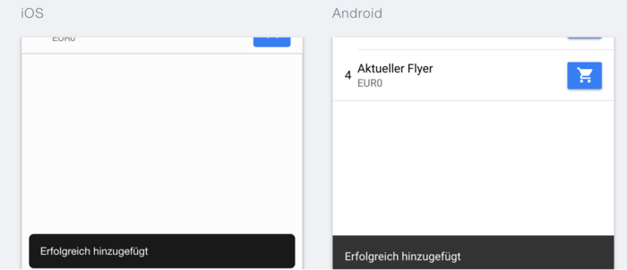

Ionic 2 Tutorial - ionList, ionSpinner, Modal und Alert
ionic2 angular angular2 angular4 tutorial | Bengt Weiße • | 27 Minuten
Aufbauend auf dem ersten Teil unseres Ionic 2 Tutorials wollen wir uns nun anschauen, wie ihr in Ionic 2 eure Inhalt ansprechend präsentieren und strukturieren könnt.
Den kompletten Quellcode der in diesem Tutorial entwickelten App findet unter unserem GitHub-Account. Außerdem gibt es auch eine Live-Vorschau der App.
Teil 2: Strukturierung von Inhalten
- Einfache und komplexe Listen -
ionList,ionItemundionItemSliding - Ladehandling - Ladelayer und - spinner mit
LoadingundionSpinner - Aktualisierung von Inhalten durch den
ionRefresher - Strukturierung von Inhalten durch Cards und
ionCard - Anzeigen zusätzlicher Informationen in Dialogen mit
Modal - Realisierung von Hinweisen und kurzer Nutzerabfragen durch
Alerts - Statusmeldungen über
Toasts
Einfache und komplexe Listen
Listen sind überall, ob als einfache Aufzählung oder Darstellung komplexerer HTML-Strukturen. In Ionic 2 sind im Vergleich zu Version 1 ein paar weitere Komponenten zur Listendefinition hinzugekommen. Wir behandeln in diesem Tutorial nur ein paar davon, die restlichen sind mit der entsprechenden Stelle in der Ionic Dokumentation verlinkt.
Typen
- einfache Liste - ionList und ionItem
- gruppierte Liste - ionItemGroup, ionItemDivider
- Listenkopfzeile - ionListHeader
- Icons in Listen - ionIcon
- Bilder in Listen - ionAvatar und ionThumbnail
- erweiterte Listen - ionItemSliding, ionItemOptions
Wir werden auch in unserer Pizza-App Listen verwenden. Auf unserer Bestell- bzw. Startseite wollen wir unser Angebot ausgeben. Dazu erstellen wir einen Ordner providers im src Ordner. Dort legen wir nun eine Datei mit dem Namen pizza.service.ts an. Sie stellt uns zwei Funktionen zur Verfügung.
- getPizzas - lädt das komplette Angebot
- getPizza(id) - gibt uns eine bestimmte Pizza zurück
Unser Angebot speichern wir in einer extra pizza.json ab. Diese legen wir in einen assets Verzeichnis im src-Ordner der Anwendung, da wir in der gebauten Anwendung Zugriff darauf brauchen.
Wir haben natürlich auch noch ein Pizza Interface erstellt, um unsere Schnittstellendaten auch zu typisieren.
Die wichtigsten Dateien findet ihr hier:
- pizza.service.ts
- pizza.model.ts
- pizza.json
- barrels - der
providersOrdner erhält eineindex.ts
Sollte euch davon noch etwas unklar sein, dann empfehlen wir euch nochmals einen Blick in unser Angular 2 Tutorial zu werfen.
Einfache Liste
Für einfache Listen hat sich im Vergleich zu Ionic 1 nicht viel verändert. Es bleiben die bekannten Komponenten ionList und ionItem. Wir wollen nun unser Angebot auf der Startseite in einer einfachen Liste ausgeben.
Sind alle Dateien an Ort und Stelle laden wir unser Angebot in der OrderComponent. Wir wollen den PizzaService und die Daten in unserer gesamten App nutzen. In einer reinen Angular2 Anwendung würden wir aus diesem Grund die providers Eigenschaft des @NgModule Decorators nutzen.
@NgModule({
...
providers: [PizzaService]
})
Danach können wir diese eine Service Instanz in jeder anderen Seite/Komponente einfach per Dependency Injection erhalten.
@Component({
templateUrl: 'order.component.html'
})
export class OrderComponent implements OnInit {
pizzas: Pizza[] = [];
constructor(
private pizzaService: PizzaService
) {}
ngOnInit() {
this.pizzaService.getPizzas().subscribe(pizzas => {
this.pizzas = pizzas;
});
}
}
Im Template greifen wir nun auf unser pizzas Array zu. Wir definieren eine Liste mit ionList und für jede Pizza erzeugen wir einen Listeneintrag über ionItem.
<ion-content class="order">
<ion-list>
<ion-item *ngFor="let pizza of pizzas">
{{pizza.name}}
</ion-item>
</ion-list>
</ion-content>

Wir können natürlich auch ein paar Informationen zu unserer Pizza ausgeben. Dazu brauche wir nur den Inhalt des ion-item Tags anpassen. Als nächsten möchten wir unserer Liste noch einen Titel Angebot geben. Dazu nutzen wir einfach die ionListHeader Komponente in unserer ionList.
<ion-content class="order">
<ion-list>
<ion-list-header>
Angebot
</ion-list-header>
<ion-item *ngFor="let pizza of pizzas">
<span item-left text-left>{{pizza.id}}</span>
<h2>{{pizza.name}}</h2>
<p>{{pizza.price | currency:'EUR'}}</p>
</ion-item>
</ion-list>
</ion-content>

Komplexe Liste
Als nächste Funktion erweitern wir unsere App um einen Warenkorb. Dieser besteht aus einer Component, einem Service und einem CartItem Interface. Für Interfaces legen wir das Verzeichnis models in den src Ordner. Auf unserer Startseite fügen wir einen Warenkorb-Button in die Navigationsleiste ein und bieten die Möglichkeit Angebote in den Warenkorb zu legen. Der Warenkorb ist per Klick über die Schaltfläche (ionButtons mit end Direktive) in unserer Navigationsleiste erreichbar.
In Ionic 2 wird die Positionierung von Elementen in den meisten Fällen mit Flexbox erledigt. Zur einfacheren Nutzung stellt das Framework Positionierungs Direktiven bereit. So könnt ihr unter anderem Schaltflächen in ionItems einfach durch die Attributdirektiven item-right und item-left ausrichten.
<ion-item *ngFor="let pizza of pizzas">
<span item-left text-left>{{pizza.id}}</span>
<h2>{{pizza.name}}</h2>
<p>{{pizza.price | currency:'EUR'}}</p>
<button item-right ion-button icon-only (click)="addToCart($event, pizza)" default>
<ion-icon name="cart"></ion-icon>
</button>
</ion-item>

Wir gehen jetzt nicht mehr näher auf die Implementierung der einzelnen Funktionen ein, da dies weniger mit Ionic, sondern mehr mit Angular 2 zu tun hat. Entnehmt eine mögliche Umsetzung einfach unserem GitHub-Repository.
ionItem, z.B. Navigieren zu einer anderen Seite, solltet ihr den ionItem-Tag in einen a-Tag umwandeln und ion-item als Attribut setzen.Im Warenkorb bauen wir eine Liste von Warenkorbeinträgen auf. Jeder Einträg soll natürlich auch wieder entfernt werden können. Dazu benötigen wir eine erweiterte Liste. Ein Listeneintrag soll dabei nach links geslidet werden, wodurch ein Löschen-Knopf zum Vorschein kommt. Beim Klick darauf wird der Warenkorbeintrag entfernt.
Ein Listeneintrag wird slidebar in dem wir das ionItem mit der ionItemSliding Komponente umschließen. Als Geschwisterknoten bekommt das ionItem nun die ionItemOptions Komponente. Sie kann wiederum eine Liste von Schaltflächen enthalten.
<ion-list *ngIf="cart.length">
<ion-item-sliding *ngFor="let item of cart; let index=index">
<ion-item>
<h2>{{item.name}}</h2>
<p>{{item.price | currency:'EUR'}}</p>
</ion-item>
<ion-item-options>
<button (click)="removeFromCart(index)" danger default ion-button icon-left>
<ion-icon name="trash"></ion-icon>
Delete
</button>
</ion-item-options>
</ion-item-sliding>
</ion-list>

<ion-item-options side="right">.Ladehandling - Ladelayer und - spinner
In viele Fällen wollen oder müssen wir sogar dem Nutzer in einer App verdeutlichen, dass gerade ein Verarbeitungsprozess im Hintergrund läuft. Sei es zum Beispiel das Abspeichern oder das Laden von Daten, der Anwender sollte Erfahren das etwas passiert. In vielen Fällen möchten wir vielleicht sogar die Eingabe weiterer Daten solange sperren, bis ein Prozess abgeschlossen ist.
In Ionic 2 passiert das - wie schon in Ionic 1 - über zwei unterschiedliche Bestandteile des Frameworks.
-
Loading- programmatisches Einblende eines Ladelayers (über die ganze Seite)
- kann Interaktionen des Nutzers unterbinden
- zusätzlicher Hinweistext
-
ionSpinner- Komponente, die im Template genutzt wird
- rotierende Ladeanzeige auf der Seite
Loading
Beginnen wir dem Ladelayer und Loading Controller. Er besitzt nur eine create Funktion, die uns erlaubt - unter Angabe von verschiedener Konfigurationsparametern - ein Lade-Overlay zu erzeugen.
Als Optionen können folgende Eigenschaften gesetzt werden.
- spinner - Name des anzuzeigenden Lade-Spinners, default: plattformspezifisch
- content - eigener Inhalt, z.B. Hinweistext
- cssClass - eigene CSS Klasse zum Stylen
-
showBackdrop -
trueoderfalse, legt abgedunkeltem Overlay über Inhalt -
dismissOnPageChange -
trueoderfalse, Ausblenden des Ladelayers beim Seitenwechsel - duration - Dauer in Millisekunden, falls Layer automatisch ausgeblendet werden soll
Im Code könnte ein Layer so erzeugt werden.
import {LoadingController} from 'ionic-angular';
...
constructor(private loadingCtrl: LoadingController) {...}
let loading = this.loadingCtrl.create({
content: 'Loading...',
dismissOnPageChange: true
});
Damit dieser auch sichtbar wird, muss er noch über die aktuelle Seite gelegt werden. Dies geschieht über die present Funktion auf dem entsprechenden Overlay-Element - hier ein Loading Overlay.
loading.present();

Ausblenden könnt ihr das Overlay über die dismiss Funktion.
loading.dismiss();
Wollt ihr beim Ausblenden noch speziellen Programmcode ausführen, dann könnt ihr dies über den onDidDismiss Hook tun.
loading.onDidDismiss(() => {
console.log('Dismissed loading');
});
loading.dismiss();
ionSpinner
Zu dieser Komponente gibt es im Prinzip nicht viel zu erzählen. Wird sie ins Template geschrieben, erscheint an der entsprechenden Stelle der plattformspezifische Ladekringel.
<ion-spinner></ion-spinner>
Sie kann über drei Attribute konfiguriert werden.
- name - Spinner Name
- duration - Dauer bis sich Spinner Icon komplett gedreht hat
- paused - Spinner anhalten
In unserem Fall wollen wir über eine isLoading Variable unsere Angebotsliste erst einblenden, wenn die Daten geladen wurden. Bis dahin soll ein Ladespinner angezeigt werden.
Unsere OrderComponent class.
export class OrderComponent implements OnInit {
pizzas: Pizza[] = [];
isLoading = true;
...
ngOnInit() {
this.pizzaService.getPizzas().subscribe(pizzas => {
this.pizzas = pizzas;
this.isLoading = false;
});
}
}
Ausschnitte des Templates und das Resultat.
<ion-content>
<div text-center padding [hidden]="!isLoading">
<ion-spinner></ion-spinner>
</div>
<ion-list [hidden]="isLoading">
...
</ion-list>
</ion-content>

Das war schon die ganze Magie hinter dem Ladehandling in Ionic 2.
Aktualisierung von Inhalten
Eine oft gewünscht und genutzte Funktionalität in Apps ist das Aktualisierung von Inhalten über einen so genannten Pull-To-Refresh Mechanismus. Dabei könnt ihr den Seiteninhalt nach unten Ziehen bis ein Schwellwert erreich wird. Danach wird der Seiteninhalte automatisch aktualisiert. Während des Ziehens wird dem Nutzer der aktuelle Status angezeigt, z.B. wann losgelassen werden kann, ob die Aktualisierung läuft oder ob noch weiter gezogen werden muss.
In Ionic 2 besteht das ganze Unterfangen, wie auch schon Ionic 1 aus zwei Teilen.
- Umsetzung im Template -
ionRefresherundionRefresherContent - Programmatischer Zugriff -
Refresher
Ein Refresher besitzt immer einen Status aus folgender Liste:
- inactive - nicht sichtbar, Nutzer zieht nicht im Inhalt
- pulling - Nutzer zieht am Inhalt und Refresher wird sichtbar (noch kein Refresh)
- cancelling - Nutzer lässt vor Aktualisierungsschwellwerten los, wird zu inactive, wenn Refresher wieder ausgeblendet wurde
- ready - Nutzer hat Inhalt über den minimalen Schwellwert gezogen, lässt er los, wird aktualisiert
-
refreshing - Aktualisierung läuft und wartet auf den Aufruf von
complete()auf der Refresher Instanz - completing - Aktualisierung abgeschlossen, ist Refresher wieder ausgeblendet, wechselt der Zustand zu inactive
ionRefresher
Im Template wird ein Refresher über die ionRefresher Komponente eingebunden. Sie ist ein direktes und das erste Kind des ionContents. Über die folgenden Inputs könnt ihr den Refresher auch noch konfigurieren.
- pullMin - minimale Distanz bis beim Loslassen aktualisiert wird (default: 60)
- pullMax - maximale Distanz bis automatisch aktualisiert wird (pullMin + x, default pullMin: + 60)
- closeDuration - Dauer in Millisekunden, die der Refresher zum Schließen/Ausblenden benötigt, default: 280
- snapbackDuration - Dauer in Millisekunden bis Refresher wieder zum Refreshing Zustand springt, default: 280
-
enabled - aktiviert/deaktiviert Refresher, sollte anstatt
*ngIfgenutzt werden, default:true
<ion-refresher></ion-refresher>
Zusätzlich könnt ihr auch noch auf Zustandsänderungen reagieren (Outputs) und in bestimmten Situationen Code ausführen lassen.
- ionStart - Nutzer beginnt am Inhalt zu ziehen
- ionPull - Während des Ziehens
-
ionRefresh - pullMin Grenze überschritten - Status wechselt beim Loslassen auf
refreshing, Spinner wird angezeigt biscomplete()ausgeführt wird.
Damit sind wir jedoch im Template noch nicht fertig.
ionRefresherContent
Ein ionRefresher benötigt als Kind eine ionRefresherContent Komponente. Sie gibt dem Refresher erst sein Aussehen. Dies passiert über folgende Attribute.
- pullingIcon - Icon Name, wenn am Inhalt gezogen wird
- pullingText - Text, der beim Ziehen angezeigt wird
- refreshingSpinner - Spinner Name, wenn aktualisiert wird
- refreshingText - Aktualisierungstext
Jetzt sieht unserer Refresher schon mal nach etwas aus.
<ion-refresher>
<ion-refresher-content
pullingText="aktualisieren..."
>
</ion-refresher-content>
</ion-refresher>
Es fehlt nur noch unsere Aktualisierungslogik.
Refresher
Um Zugriff auf den aktuellen Refresher auf einer Seite erhalten, müsst ihr für die Typisierung die Refresher Komponente aus Ionic importieren und im Constructor der @Component injizieren.
import {Refresher} from 'ionic-angular';
Als nächstes benötigen wir noch eine Funktion, die unsere Daten aktualisiert und am Ende müssen wir dem Refresher Bescheid geben, dass der Aktualisierungsprozess abgeschlossen ist. Dies machen wir über die schon mehrfach erwähnte complete Funktion. Zugriff auf die aktuelle Refresher Instanz erhalten wir über das $event Objekt eines Outputs.
doRefresh(refresher: Refresher) {
const subscription = this.pizzaService
.getPizzas()
.subscribe(pizzas => {
this.pizzas = pizzas;
refresher.complete();
subscription.unsubscribe();
});
}
Im Template sieht der Aufruf der doRefresh folgendermaßen aus.
<ion-refresher (refresh)="doRefresh($event)">
<ion-refresher-content
pullingText="aktualisieren..."
>
</ion-refresher-content>
</ion-refresher>

Strukturierung von Inhalten durch Cards
Der Einsatz von Cards zum Strukturieren und Trennen von Inhalten wird immer beliebter. Dabei kann ihr Inhalt aus reinem Text bis hin zu komplexen HTML-Strukturen bestehen.
Wir wollen Cards auf den Detailseiten zu unseren Angeboten nutzen. Dazu nutzen wir unseren Pizza Service und die getPizza Funktion. Sie macht erstmal nichts anderes als unsere getPizzas Funktion. Jedoch erwartet sie die ID des zu suchenden Angebots als Funktionsparameter, denn wir wollen nur ein bestimmtes Angebot anzeigen.
Jetzt müssen wir noch eine DetailComponent mit einem entsprechendem Template anlegen. Beim Klick auf ein Angebot soll sich ihre Detailseite anhand der ID öffnen. Dort wird das entsprechende Angebot geladen und angezeigt. Die Funktion zum Navigieren in unserer Bestellseite könnte wie folgt aussehen.
openPizza(id: number) {
this.nav.push(DetailComponent, {
id: id
});
}
Nun schauen wir uns die verschiedene Möglichkeiten an Cards zu nutzen. Eine Card wird in Ionic immer über die ionCard Komponente im Template genutzt.
<ion-card></ion-card>
Im einfachsten Fall enthält eine Card nur reinen Text. Damit dieser automatisch richtig angezeigt wird, existiert die ionCardContent Komponente. Sie umschließt den eigentlichen Inhalt einer Card. Auf unsere Detailseite angewandt, könnte der HTML-Code ungefähr so aussehen.
<ion-card>
<ion-card-content>
<h2>{{pizza?.name}}</h2>
<p>Ist in unserem Angebot die Nummer {{pizza?.id}}</p>
</ion-card-content>
</ion-card>
Und das Ergebnis sieht schon mal gar nicht so schlecht aus.

Zum expliziten Auszeichnen eines Card-Titels stehen uns zwei Möglichkeiten zur Verfügung.
-
ionCardTitle- Setzen des Titels imionCardContent -
ionCardHeader- Titel für die ganze Card
Wir schauen uns den jeweiligen Quellcode und das damit verbundene visuelle Resultat an. Wir beginnen mit dem ionCardTitle.
<ion-card>
<ion-card-content>
<ion-card-title>{{pizza?.name}}</ion-card-title>
<p>Ist in unserem Angebot die Nummer {{pizza?.id}}</p>
</ion-card-content>
</ion-card>

Und im Vergleich dazu die Lösung mit ionCardHeader.
<ion-card>
<ion-card-header>
{{pizza?.name}}
</ion-card-header>
<ion-card-content>
<p>Ist in unserem Angebot die Nummer {{pizza?.id}}</p>
</ion-card-content>
</ion-card>

Wann ihr was benutzt, hängt immer von eurem Anwendungsfall ab. Wie wir gleich sehen werden, kann eine Card auch komplexere Strukturen beinhalten. Dabei wird dann der ionCardHeader wirklich immer am Anfang und als erstes in der Card angezeigt. Wollt ihr jedoch einen Titel einfach im Inhaltsbereich der Karte ausrichten, dann bietet sich ionCardTitle an.
ionCardContent, ionCardHeader, ionCardTitle sind nicht Pflicht. ihr könnt auch einfach das Styling selbst übernehmen. Sobald ihr `ionCard` nutzt, erhaltet ihr immer das Basislayout einer Card.Des Weiteren könnt ihr auch weitere Ionic Komponenten, wie ionAvatar, ionNote und ionItem, zum Füllen eurer Cards nutzen.
Lasst euch von ein paar Ideen aus der Ionic Dokumentation inspirieren. Gerade das Arbeiten mit Bildern macht etwas her.
Eine etwas komplexere Card für unser Angebot könnte dann so aussehen.
<ion-card *ngIf="pizza">
<ion-item>
<ion-icon name="pizza" item-left large></ion-icon>
<h2>{{pizza.name}}</h2>
<p>Ist in unserem Angebot die Nummer {{pizza.id}}</p>
</ion-item>
<ion-card-content>
{{pizza.description}}
</ion-card-content>
<ion-item>
<span primary clear item-right>
<ion-icon balanced></ion-icon>
{{pizza.price ? (pizza.price | currency:'EUR') : 'kostenlos'}}
</span>
</ion-item>
</ion-card>

Damit sind wir mit dem nächsten großen Punkt auf dem Weg zu unserer Pizza-App fertig.
Anzeigen zusätzlicher Informationen in Dialogen
Modale und Dialoge sind - und waren es auch schon in Ionic 1 - fester Bestandteil von Webseiten und Apps. Natürlich findet ihr diese wichtige Funktion auch in Ionic 2 wieder.
Erstellen und Öffnen eines Modals
Ein Modal ist dabei eine normale Component Klasse, welche über die create Funktion des Modal Controllers erst zu einem richtigen Modal wird.
Dort wo der Modal aufgerufen wird, erzeugen wir aus der Component einen Modal und haben die Möglichkeit, wie schon bei den Ladelayern, ihn mittels der present Funktion unseres erzeugten Overlay-Elements - in diesem Falle eine ModalController-Instanz - über die aktuelle Seite zu legen.
Ziel dieses Abschnittes ist es aus unserer Über Uns Seite einen Modal zu machen, welcher sich beim Klick auf den Eintrag im Seitenmenü öffnet. Wir benennen deshalb die Component und die dazugehörigen Dateien um.
// about/about-modal.component.ts
@Component({ ... })
export class AboutModalComponent { ... }
Im Template ersetzen wir die ionNavBar mit einer ganz normalen ionToolbar.
// about/about-modal.component.html
<ion-header>
<ion-toolbar>
<ion-title>Über Uns</ion-title>
</ion-toolbar>
</ion-header>
Als nächsten Schritt müssen wir in unserer App-Klasse, die Logik zum Öffnen des Dialogs einbauen.
import {ModalController, ...} from 'ionic-angular';
...
constructor(private modalCtrl: ModalController) {...}
openAboutModal() {
// create modal
const modal = this.modalCtrl.create(AboutModalComponent);
// open modal
modal.present();
}
Im Template weisen wir dem Klick-Event des Über Uns Eintrags die openAboutModal Funktion zu.
<button ion-item menuClose (click)="openAboutModal()">
<ion-icon name="people"></ion-icon>
Über Uns
</button>
Das Ergebnis ist schon gar nicht mal so schlecht.

Schließen eines Modals
Aber wie schließen wir das ganze wieder? Ganz einfach!
Wir können einfach unsere NavController Instanz nutzen und führen ein pop aus, beispielsweise beim Klick auf einen Schließen-Button im Modal Template.
Es gibt aber noch eine andere Möglichkeit, die uns sogar erlaubt noch zusätzlich Daten beim Schließen aus dem Modal heraus zu übertragen. Dazu nutzen wir die dismiss Funktion des zum Modal gehörenden ViewControllers. Jede Seite besitzt einen ViewController, welcher Informationen und zusätzliche Funktionen zur aktuellen View bereitstellt. Bei einem Modal nutzen wir die dismiss Funktion, die die View schließt und entfernt.
import {Component} from '@angular/core';
import {ViewController} from 'ionic-angular';
@Component({
templateUrl: 'about-modal.component.html'
})
export class AboutModalComponent {
constructor(private viewCtrl: ViewController) {}
closeModal(): void {
this.viewCtrl.dismiss();
}
}
Der Schließen-Knopf könnte dann im Template so eingebaut werden:
<ion-toolbar>
<ion-buttons start>
<button (click)="closeModal()" ion-button ion-icon>
<ion-icon name="close"></ion-icon>
</button>
</ion-buttons>
<ion-title>Über Uns</ion-title>
</ion-toolbar>

Daten aus dem Modal extrahieren
Vorteil dabei ist, dass dismiss ein optionales Objekt an Daten entgegennimmt. Auf dieses kann dann auf der Modal Instanz über den onDidDismiss Hook zugegriffen werden. Es folgt ein kleines Beispiel.
modal.onDidDismiss(data => {
console.log(data);
});
Daten an den Modal übergeben
Nun kann ich Daten aus dem Modal nach außen geben, aber wie bekomme ich Daten von außen in den Modal? Nichts leichter als das. this.modalCtrl.ceate() kann mit einem optionalen zweiten Parameter ausgestattet werden. Dabei handelt es sich um ein Parameter-Objekt.
const modal = this.modalCtrl.create(AboutModalComponent, { data: 123 });
Die Klasse unseres Modal erhält die Daten dann als Navigationsparameter, welche über die Dependency Injection geladen werden können.
constructor(params: NavParams) {
console.log('data', params.get('data'));
}
Realisierung von Hinweisen und kurzer Nutzerabfragen
In Ionic 1 noch Popups genannt, müssen wir uns jetzt an den Begriff Alert gewöhnen. Daran ist nichts schlechtes und ihre Nutzung hat sich doch stark verbessert. Sie sind flexibler und generischer geworden. Anstatt für grundlegende Anwendungen extra Funktionen anzubieten, haben wir jetzt nur noch eine generelle Funktion.
Alert erzeugen und öffnen
Ähnlich zum Modal gibt es einen extra Controller (AlertController) mit einer create Funktion. Ein Alert wird jedoch anstatt mit einer Klasse über ein einfaches Konfigurationsobjekt erstellt, welches über folgende Schlüssel konfiguriert werden kann.
- title - Titel der Hinweisbox
- subTitle - Untertitel der Hinweisbox
- message - Hinweistext
- cssClass - eigene Klasse zum Stylen
- inputs - Liste und Konfiguration von Eingabefeldern
- buttons - Liste von Schaltflächen
-
enableBackdropDismiss - Klick auf den Backdrop schließt Alert ( truefalse)
Dabei kann ein input wiederum folgende Eigenschaften besitzen.
- type - Typ des Feldes (text, email, number, …)
- name - Name des Eingabefeldes
- placeholder - Platzhaltertext
- value - Standardwert
- checked - falls Checkbox, wird diese angehakt
- id - Setzt Id Attribut
Schalflächen haben dagegen einen anderen Aufbau.
- text - Beschriftung
- handler - Callback Funktion, wenn auf Button geklickt wird
- cssClass - Styling über zusätzlich Klasse
-
role - setzt
roleAttribut,cancelodernull
In unserer App wollen wir, wenn der Warenkorb leer ist und er aufgerufen wird, ein Alert auf der Warenkorb Seite anzeigen. Er zeigt dann einen Hinweis, dass es erst Produkte in den Warenkorb gelegt werden sollten.
Dazu müssen wir einmal einen Alert über create() erzeugen, ihn dann auf die aktuelle Seite legen (Alert Instanz, present()). Um den passenden Moment abzuwarten und keine störenden Effekte zu erzeugen, warten wir bis die Transition abgeschlossen ist. Dazu bietet sich der ionicView Lifecycle Hook onIonicViewDidEnter an.
import {AlertController, ...} from 'ionic-angular';
...
constructor(private alertCtrl: AlertController) {...}
ionViewDidEnter(): void {
if (this.cart.length) {
return;
}
const alert = this.alertCtrl.create({
title: '<b>Dein Warenkorb ist leer!</b>',
subTitle: 'Füge zuerst Produkte aus Unserem Angebot zu Deinem Warenkorb hinzu.',
buttons: ['OK']
});
alert.present();
}
Ein Button kann auch nur über seinen Text definiert werden. Dadurch sparen wir uns Schreibarbeit.

Alert schließen
Im Normalfall wird das Alert automatisch beim Klick auf einen definierten Button automatisch geschlossen. Würde jedoch seine handler Funktion false zurückgeben, wird das automatische Schließen unterbunden.
Eine Alert Instanz besitzt zusätzlich auch eine dismiss Funktion, die einfach aufgerufen werden kann.
alert.dismiss();
Weitere Funktionen zu Alerts
Darüber hinaus könnt ihr das Alert nachträglich auch flexibel programmatisch über nachstehende Funktionen auf ihrer Instanz ändern.
- setTitle(title) - setzt den Titel
- setSubTitle(setSubTitle) - setzt den Untertitel
- setMessage(message) - ändert Hinweistext
- setCssClass(class) - setzt die eigene CSS Klassse
- addInput(input) - Fügt ein Eingabefeld hinzu
- addButton(button) - fügt einen weiteren Button hinzu
Statusmeldungen über Toasts
Oft sind Alerts einfach zu viel. In vielen Fällen reicht das Einblenden einer kurzen und unauffälligen Meldung. Aus nativen Anwendungen sicher bekannt, sind die so genannten Toast-Nachrichten. Ionic hat sie in die neue Version des Frameworks integriert. Das bedeutet endlich das Ende vom Einbinden externer Module oder gar nativer Plugins für solch eine simple Funktionalität.
Toast anlegen und anzeigen
Toasts funktionieren genauso einfach, wie ein Modal oder Alert. Wir importieren den ToastController und rufen die create Funktion auf, welche wieder ein Konfigurationsobjekt entgegennimmt.
- message - Nachrichtentext
- duration - automatisch nach x Millisekunden ausblenden
- cssClass - zusätzliche CSS Klasse
- showCloseButton - optionaler Schließen-Button (default: false)
- closeButtonText - optionaler Schließen-Text (default: Close)
- dismissOnPageChange - automatisches Schließen beim Seitenwechsel (default: false)
In unserer App wollen wir nun beim Hinzufügen und Löschen eines Warenkorbeintrags eine Toast Nachricht anzeigen. Im folgenden zeigen wir dies nur an dem Beispiel des Hinzufügens. Dazu erweitern wir unsere addToCart Funktion in unserer OrderComponent.
addToCart($event, pizza: Pizza) {
$event.stopPropagation();
this.cartService.addCartItem(pizza);
const toast = this.toastCtrl.create({
message: 'Erfolgreich hinzugefügt',
duration: 500
});
toast.present();
}

Toasts schließen
Wenn keine duration für das automatisch Ausblenden oder kein Schließen-Button angezeigt wird, passiert das Schließen wieder ganz einfach über die dismiss Funktion auf dem Toast. Auch hier habt ihr die Möglichkeit auf das Schließen über den onDidDismiss Hook zu reagieren.
toast.onDidDismiss(() => {
console.log('Toast closed');
});
toast.dismiss();
onWillDismiss Hook.Generell müsst ihr einfach folgende Schritte zum Erstellen von Komponenten, die die View überlagern, beachten.
- Entsprechenden Controller von
ionic-angularimportieren - Mittels Dependency Injection im Konstruktur eurer Komponente laden
-
create()-Funktion der Controller-Instanz aufrufen und das Ergebnis auf einer Variablen speichern -
present()-Funktion aufrufen
Fazit
Auch in Ionic 2 stehen euch viele Möglichkeiten zur Verfügung eure Inhalte zu strukturieren und anzuzeigen. Hier hat das Ionic Team an vielen Stellschrauben gedreht und sogar neue Features eingebaut. Dabei erkennt man schnell das Grundkonzept der meisten Komponenten, da ihre Nutzung im Code doch recht ähnlich ist.
Im letzten Teil unseres Ionic 2 Tutorials erfahrt ihr noch mehr über spezielle bzw. besondere Bestandteile des Frameworks.


Bengt Weiße
Bengt Weiße kommt aus dem grünen Herzen Deutschlands und interessiert sich schon seit seiner Kindheit für die Webentwicklung. Darum machte er auch sein früheres Hobby zum Beruf. Er beschäftigt sich bereits seit mehreren Jahren mit Web- und hybriden mobilen Anwendungen. Neben der frontendseitigen Umsetzung entwickelt er auch die nötigen Schnittstellen auf Basis von NodeJS und MongoDB. Anfang 2016 veröffentlichte er das erste deutsche Buch über das Ionic Framwork mit dem Titel "AngularJS & Ionic Framework, welches auch die nötigen Grundlagen im Bereich AngularJS vermittelt.